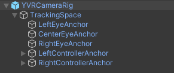

Camera Rig
The YVR Unity package contains a prefab, YVRCameraRig, which is the core of the whole SDK. It also provides access to YVRManager, which is the main entry to VR features.
The YVRCameraRig contains a game object named TrackingSpace, which is designed to fine-tune the relationship between the head tracking reference frame and your world.
Under the TrackingSpace, you will find a CenterEyeAnchor game object, which is tagged as the main Unity camera, two anchor game objects for each eye, named LeftEyeAnchor and RightEyeAnchor individually, and two anchor objects for both controllers, named LeftControllerAnchor and RightControllerAnchor individually.

Understand Camera Behavior
When YVR Unity packages are imported in Unity, your head-mounted device will automatically pass the head and controllers tracking reference to Unity, which allows the Unity camera's position and orientation to match with your position and orientation in the real world.
In some games, you may require to control the movement of the player character(identified by the camera). In these cases, you can make the YVRCameraRig a child of one game object, and create a script to control the movement of that game object.
Add YVRCameraRig in the scene
YVRCameraRig is a replacement for Unity's main camera, which means that Unity's main camera should be deleted from the Hierarchy view and using YVRCameraRig when building an app on YVR devices.
Perform the following steps to replace Unity's main camera with YVRCameraRig:
- Right-click on the
Main Cameragame object in Hierarchy window, and clickDelete. - Enter the
Projecttab, expand thePackages -> YVR Core -> Prefabsfolder, drag theYVRCameraRigprefab into the Hierarchy panel.